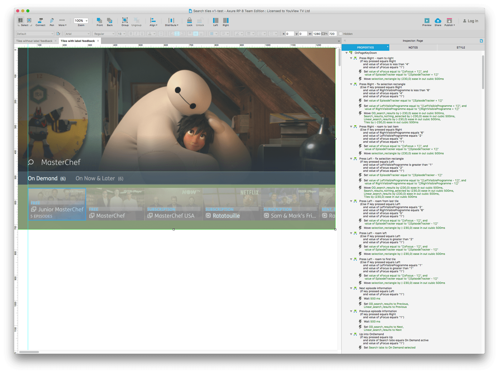

Prototyping for TV
Information about user research and prototyping for TV is lacking compared to mobile & web. Most of it is transferrable but – at YouView – we’ve encountered problems where we’ve had to innovate in order to achieve what’s standard practice on other platforms. One of the biggest barriers has been prototyping because we use infrared input and there aren’t any obvious, pre-packaged solutions for prototyping with a remote control.
It feels like we’ve tried every prototyping tool under the sun (R.I.P. Pixate ⚰️). Using Axure we’d tied ourselves into the deepest, most convoluted conditional logic that it was no longer feasible to return to a project.
A screenshot of one of my colleague’s more complicated prototypes –  Axure’s conditional chaos. And that’s a fraction of it.
Axure was good in that it was one of the few prototyping tools that allowed for keyboard input. We’d discovered that you could buy a cheap infrared receiver called a FLIRC and that it could be used to convert infrared input into keyboard input. Perfect.
We got by like this for some time and when we needed more intricate prototypes, we would hire contractors who weren’t from a design background. That made communication difficult.
Enter Framer.
Framer was introduced to me by a colleague who described it as,
…pretty much javascript. If you can use that you might as well work on the set top box.
That was fairly intimidating but equipped with some decaying programming skills from school and a determination to stop using Axure (see above), I’d decided to stick with it.
We’d stumbled upon this nifty little example which seemed to perfectly meet our needs. Unfortunately the syntax looked pretty dense compared to the mobile prototypes and it became fairly clear that Framer wasn’t designed for TV but we persevered.
Using FLIRC with a YouView TV Guide prototype
A year of learning later and we’re finding it’s quite hard to get an entire design team – with little knowledge of object oriented programming – to use a tool to do something for which it wasn’t designed. Keyboard input creates a whole host of problems, such as repeating input and complicated syntax, so we came up with a (hopefully) simpler solution than Framer had previously offered.
Keyboard Input for Framer
After many prototypes I felt like I’d come to a conclusion about how I wanted to use keyboard input in a way that was relatively similar to Framer’s existing syntax. It still requires a knowledge of functions which I think was a bit of a stumbling block. That said, you only have to write one line of code for each key which simplifies things considerably –
The Old Way
1
2
3
4
5
6
7
8
9
enter = 13
document.addEventListener 'keydown', (event) ->
keyCode = event.which
eventHandler(keyCode)
event.preventDefault()
eventHandler = Utils.throttle 0.3, (keyCode) ->
switch keyCode
when enter
doSomething()
The New Way
1
keyboard.onKey(keyboard.enter, doSomething, 0.3)
I’ve written a more comprehensive guide on how to use the module on Github so if the module sounds like something you’d be interested in, take a look –